Outline
- Motivation for time series data acquisition
- UAS-based monitoring survey design
- Processing UAS data time series, temporal data framework
- Basic analysis of 3D data time series, volumes
- Dynamic visualization of time series
- Applications in crop monitoring, viewsheds
UAS for monitoring changes
Low cost and rapid deployment: excellent for monitoring changes at local scale (fields, small watersheds)
- crop monitoring: growth, disease, stress
- erosion processes: coastal, stream bank, rills and gullies
- natural disasters: flooding, landslides, fire
- Industrial: mining, construction sites
Monitoring design
- Metrics to quantify changes: relative height, volume, feature migration
- Spatial resolution: needed to capture the changes
- Temporal resolution: regular intervals, events
- Accessibility: flying over people, line of sight, suitable GCPs
- Georeferencing, rectification: GCPs distribution and survey
Processing time series
- Analyze and interpolate point clouds: DSMs with aligned, common resolution grids
- Data: raster DSMs are more suitable for time series than TIN
- Accuracy: use GCPs and permanent features to evaluate accuracy, correct errors and distortions
- Temporal data: assign time stamps and register raster DSMs within GIS-based temporal data framework
Temporal data framework
- supports efficient processing, management and analysis of space-time data sets
- space-time dataset is a set of maps (raster, vector) registered in a temporal database
- space-time dataset may represent a dynamic process
- individual maps represent the states of the dynamic system at a given time
Gebbert, S. and Pebesma, E. (2014). A temporal GIS for field based environmental modeling. Environmental Modelling and Software, 53, 1–12.
Timestamp type
- Timestamp: assigns time to an individual map in space-time data set
- time instant: snapshot at given time: 2013-10-15 13:00:00 (absolute time)
- time interval: defined by start and end time: day, month, year (relative time)
- Temporal Aggregation: a single UAS survey represents a snapshot (state) which can be agreggated by time intervals
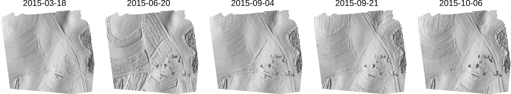
Registered time series
Timeline tool: time and spatial extent of registered maps
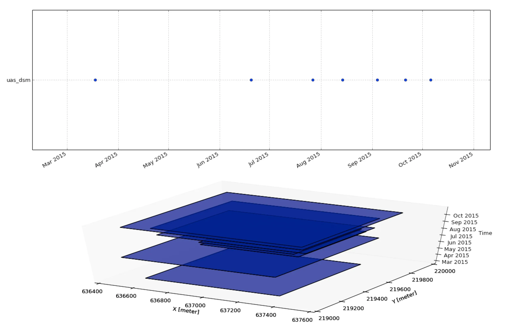
Temporal plot
- Plot time series of elevation values at a given location
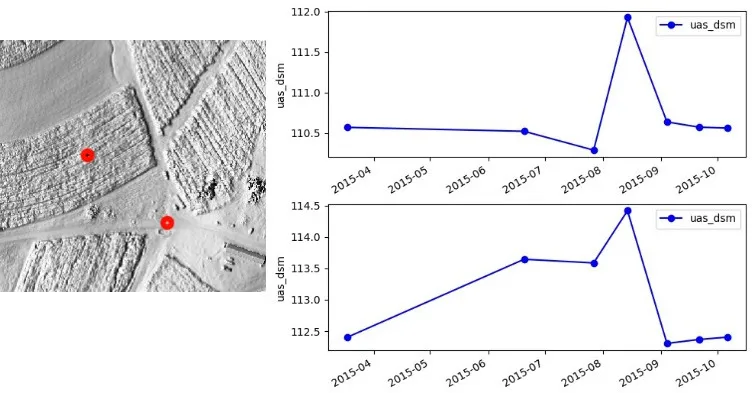
Temporal count and intersection
- Count: number of maps (temporal snapshots) where the given cell has non-null value (overlap)
- Intersection: grid cells with non-null values from each map in time series
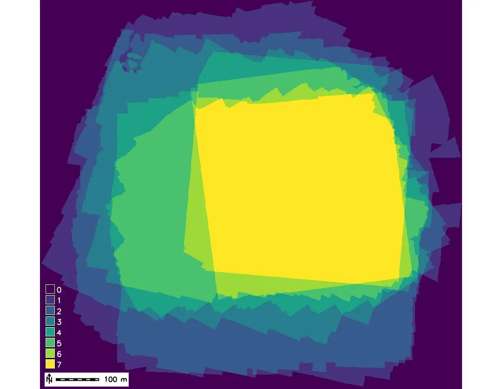 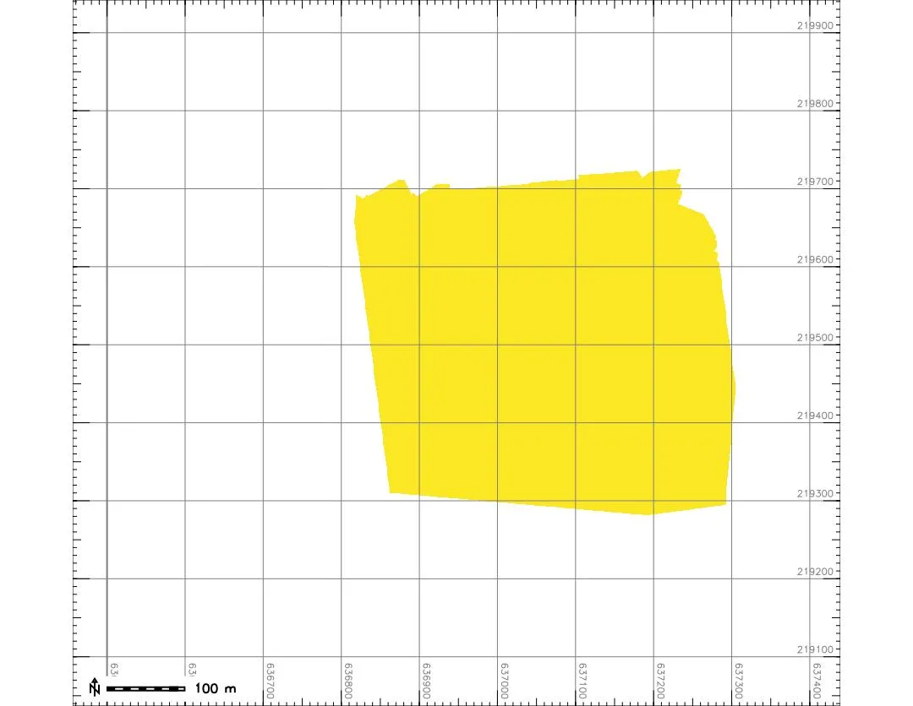
Temporal aggregation
- Temporally aggregate maps over a given period of time - for example to derive monthly average elevation
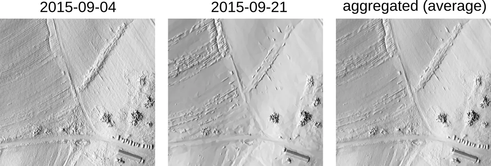
Basic time series analysis
Per cell statistics computed for each cell over the time series:
- Mean and standard deviation
- Min, max elevation and range
- Time at minimum, time at maximum
- Linear regression: slope, offset, regression coefficient
Reference:
Mitasova, H., Hardin, E., Overton, M., and Harmon, R.S., 2009, New spatial measures of terrain dynamics derived from time series of lidar data, Proc. 17th Int. Conf. Geoinformatics, Fairfax, VA.
Basic time series analysis: core, envelope
- Core surface: minimum elevation measured for each cell
- Envelope: maximum elevation measured for each cell
Example: cutting plane with lidar, core and envelope
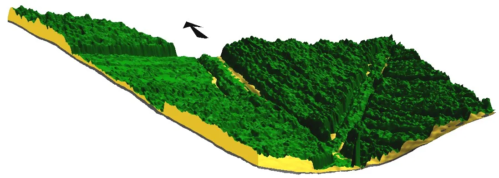 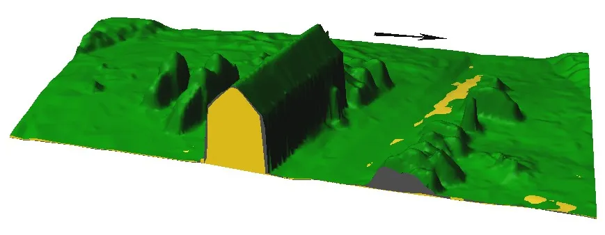
Detecting surveys with large distortions
- Derive core surface from UAS time series
- Compute difference between UAS core and lidar bare ground surface
- Compute time of minimum raster to identify the distorted DSMs with elevation well below lidar bare ground
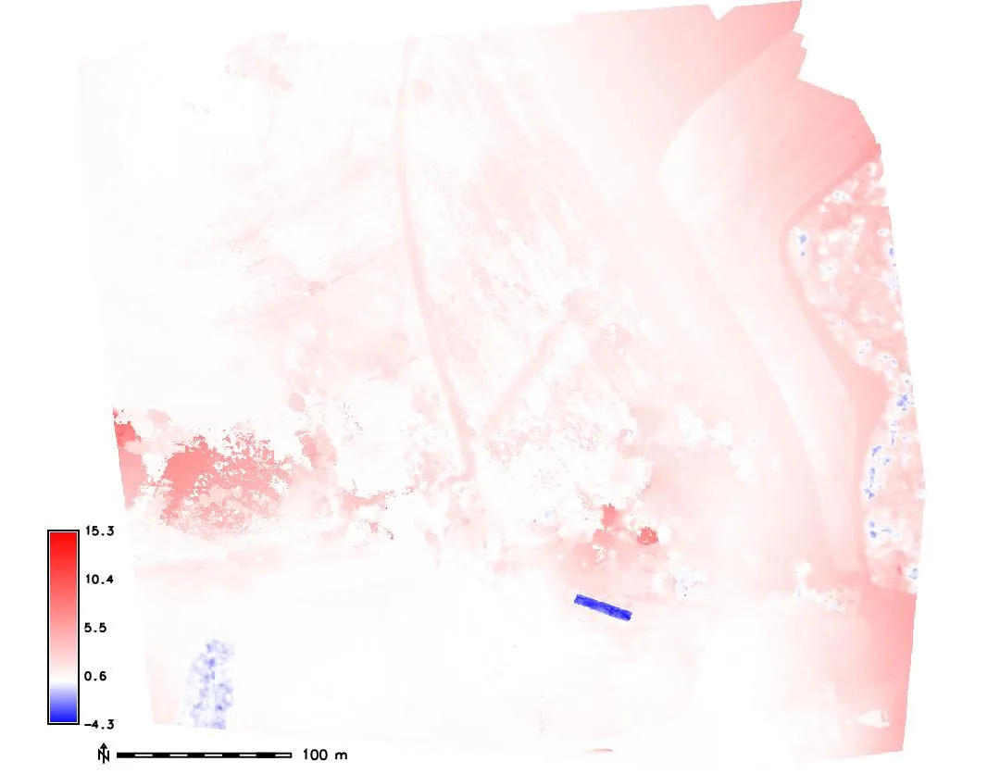 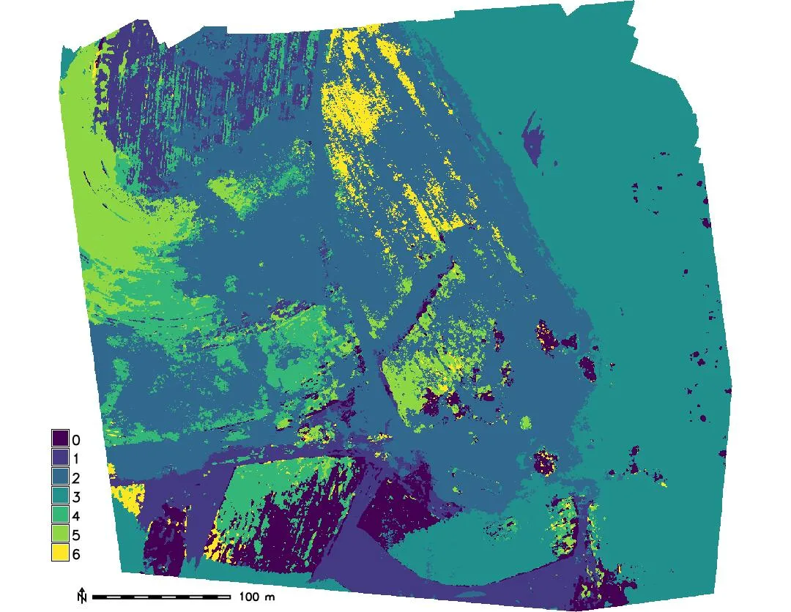
Corrected UAS core surface
- Remove distorted DSMs from derivation of core surface
- Difference between UAS core and lidar bare ground surface is now very small
- Hist. equalized color ramp for differences highlights a small shift in lidar swath
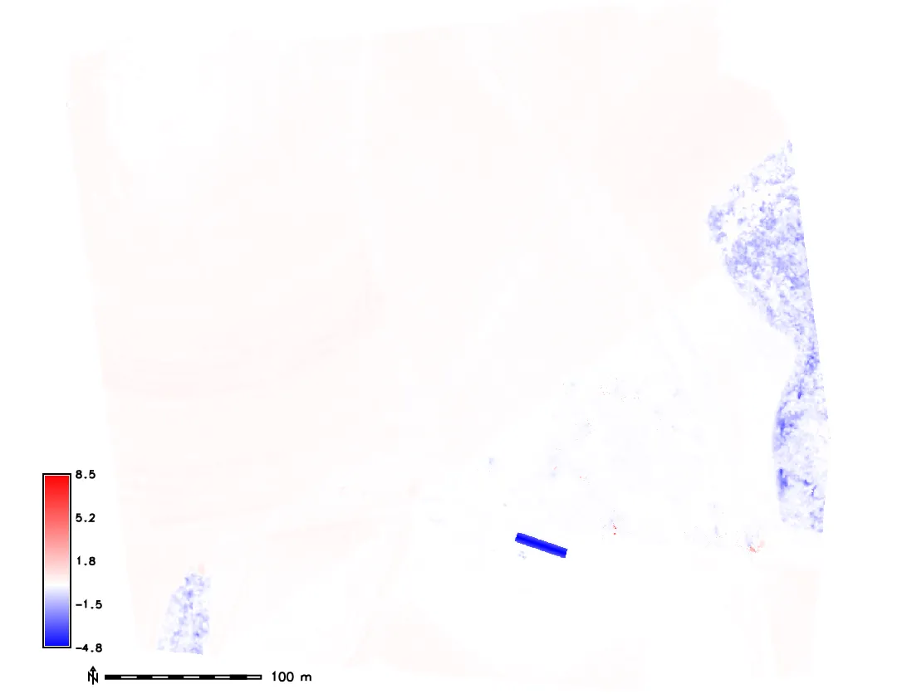 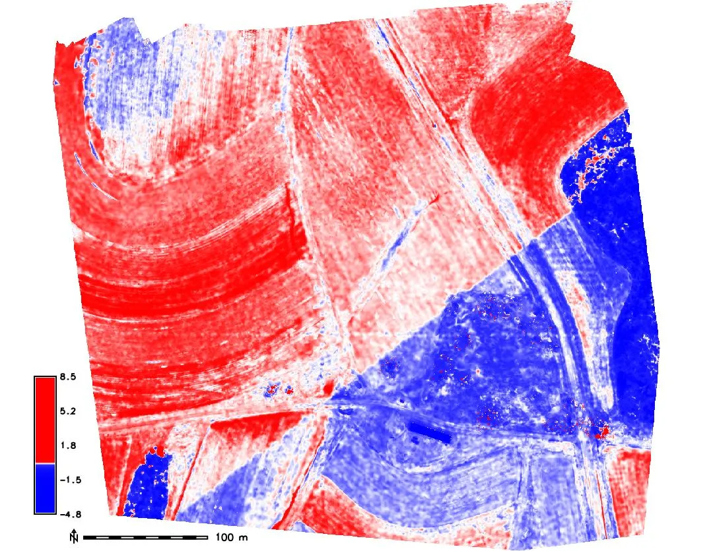
Envelope and range applications
- Envelope: what is the max height of crop in each pixel over the monitored period?
- Time of maximum - when was the crop highest at each grid cell?
- Where is the largest range and variability in crop height?
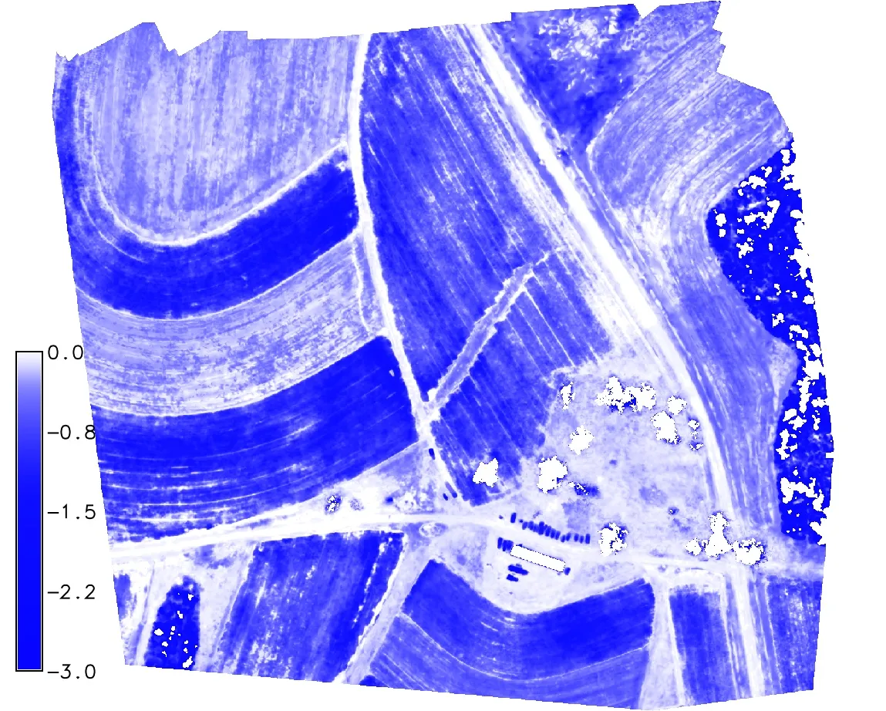 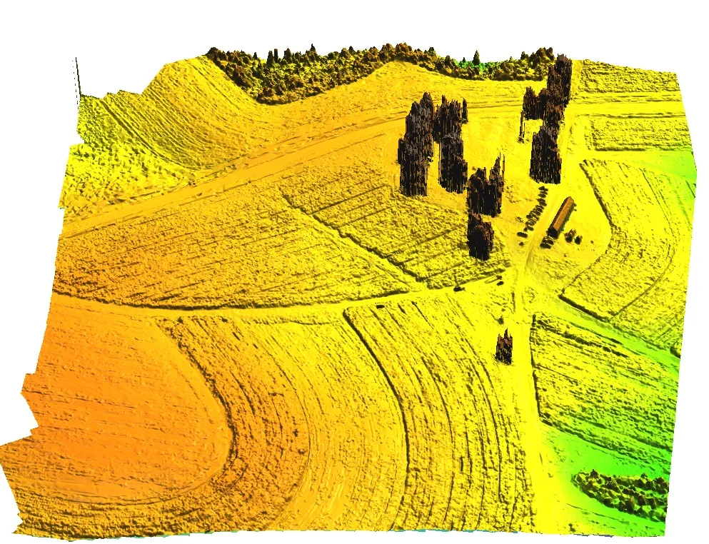
Envelope and range applications
- Use envelope to show all cars ever parked at the site
- Core, snapshot, envelope, surfaces can be used to manage parking area
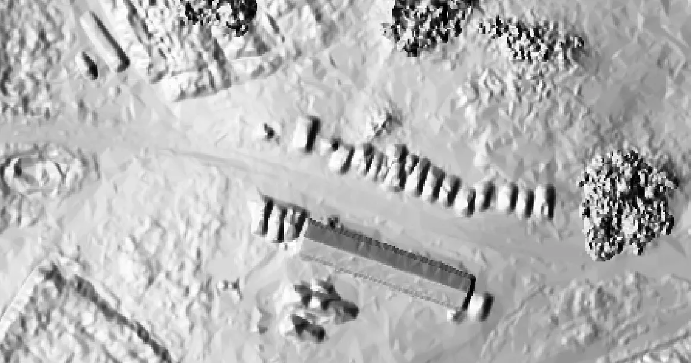
Basic time series analysis: regression
- Applies to well designed, systematic monitoring with longer time series
- Select subset where the changes are close to linear - e.g. crop growth period
- Compute per cell linear regression analysis: map of regression slope and offset
Map algebra for time series
- Apply map algebra expression for each map in the time series at each grid cell
- Output is new time series which is registered as a new space-time dataset
- This is different (and much simpler) from temporal map algebra
Estimate crop volume
Summary statistics can be used to estimate above ground crop biomass
Estimate volume of structures
- Compute volume based on difference between bare ground and above ground feature, such as building
Analysis: Viewsheds
Evaluate influence of vegetation on the viewshed area
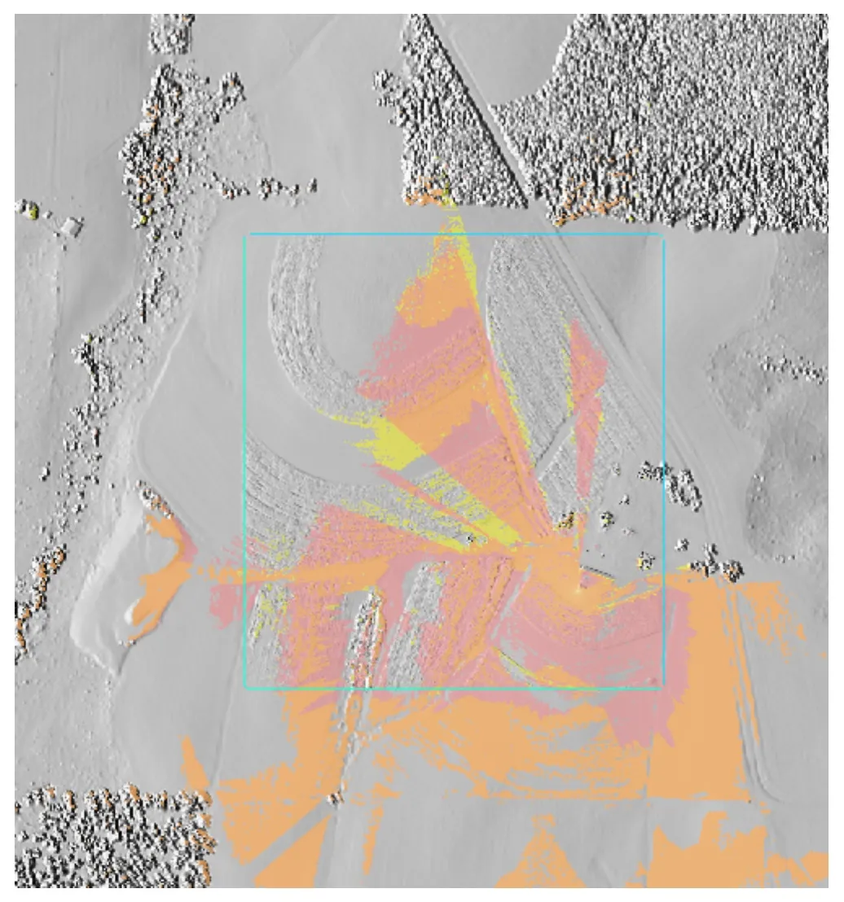
Spatial extent of viewshed changes over time depending on the height of surrounding vegetation, different colors show the spatial extent of viewshed at different times
Analysis: Viewsheds
Provide analysis to support siting of a monitoring webcam
Spatial extent of viewshed changes over time depending on the height of surrounding vegetation
Dynamic visualization
- See Terrain time series visualization in the GRASS temporal workshop
- We covered the basics in the flow modeling example
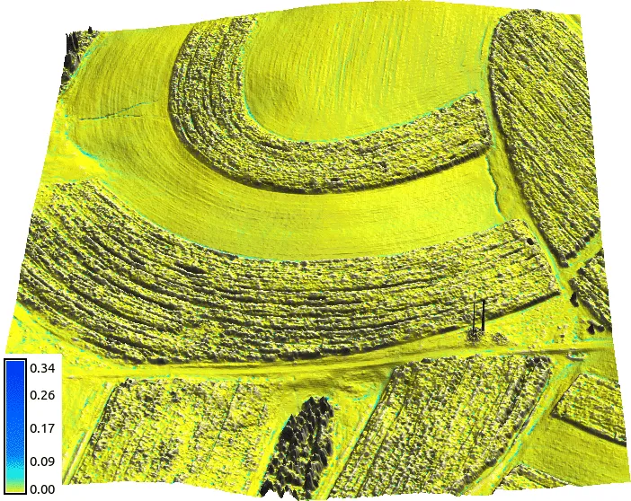
What we have learned
- UAS 3D monitoring basic considerations
- Temporal framework concept
- Computing core and envelope and its application
- Identification of distorted DSMs in time series
- Estimation of volumes
- Analyzing changing viewsheds
- Dynamic visualization